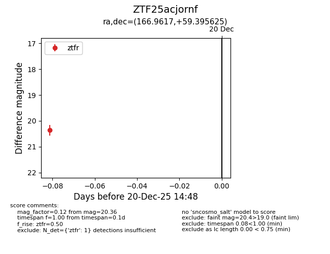
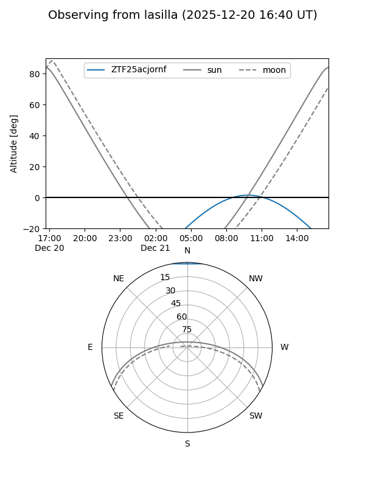
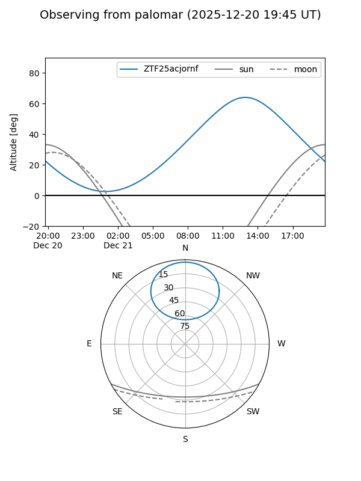

ZTF25acjornf
Target ZTF25acjornf at 2025-12-20 14:49
Aliases and brokers:
FINK: fink-portal.org/ZTF25acjornf
Lasair: lasair-ztf.lsst.ac.uk/objects/ZTF25acjornf
ALeRCE: alerce.online/object/ZTF25acjornf
alt names
ZTF25acjornf (ztf,fink_ztf)
Coordinates:
equatorial (ra, dec) = 166.9617,+59.39563
equatorial (HMS+DMS) = 11:07:50.80,+59:23:44.25
galactic (l, b) = (144.6879,+53.13614)
Flags:
Photometry:
last ztfr=20.36
1 ztfr detections
Lightcurve

Visibility


Additional plots